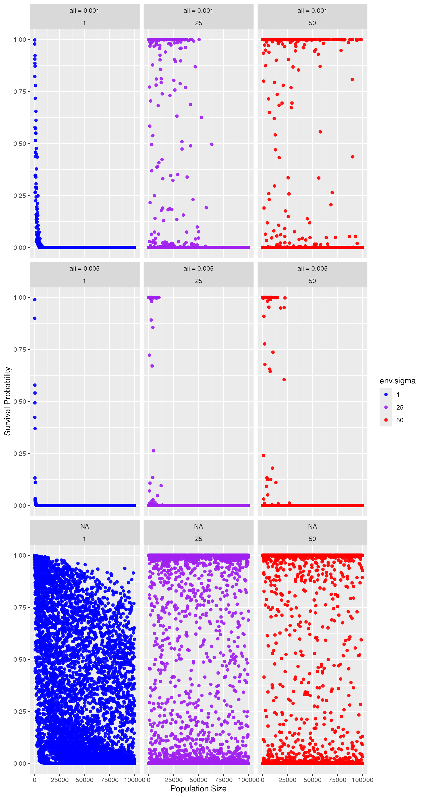
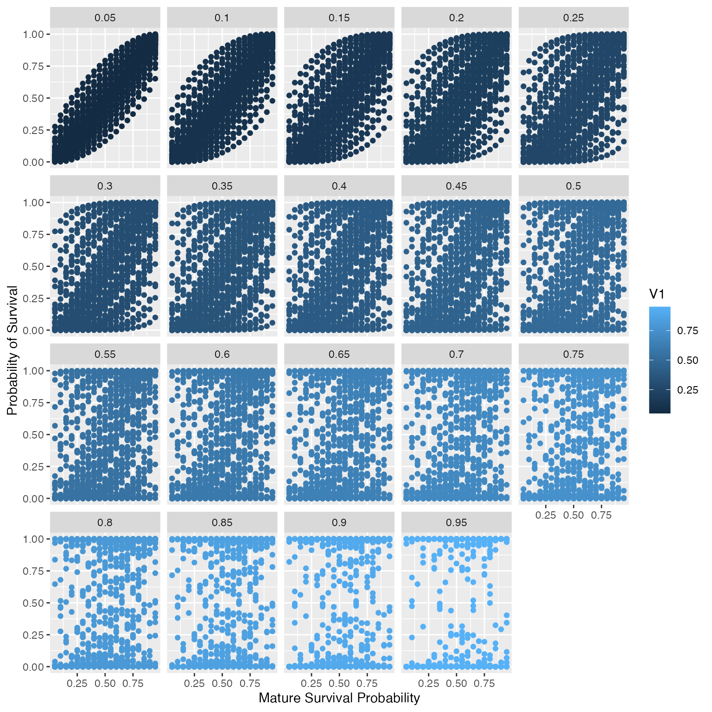

Here we describe the parameters associated with immature and mature survival.
Table 1: Summary of model parameters associated with survival.
| In-text | In-code | Definition |
|---|---|---|
| \(\color{red}{\rho}\) | \(\color{red}{rho}\) | Rank correlation between surivival of different cytotypes. |
| \(\color{red}{a_{i}}\) | \(\color{red}{aii.vec}\) | Cytotype-specific response to competition related to immature survival. |
| \(\color{red}{\alpha_{i,k}}\) | \(\color{red}{is.density.type}\) | Type-specific density dependence. Competitive effect of cytotype \(k\) on cytotype \(i\)’s survival. Options: “all” or “like-cytotype”. When equal to “all”, \(\alpha_{i,k} = 1\). Similarly, when equal to “like-cytotype”, \(\alpha_{i,k} = 0\) |
| \(\color{red}{y_{j}}\) | \(\color{red}{yj}\) | Stage-specific density dependence. |
| \(\color{red}{env.immature.survival}\) | Allows environmental stochasticity to influences immature survival. Defaults as “TRUE” | |
| \(\color{red}{\sigma}\) | \(\color{red}{env.sigma}\) | Proportion of environmental variance for immature individual. |
| \(\color{red}{\mu}\) | \(\color{red}{as.msurv}\) | Survival probability of an mature individual for each cytotype. |
| \(\color{red}{ci}\) | \(\color{red}{env.ci}\) | Proportion of environmental variance used to define mature survival rate per generation. |
Immature survival
Immature survival is defined as: \[\hat{s}_{i,1}(t) = \frac{e^{\mu_{i,1}}}{1+e^{\mu_{i,1}}} = \text{exp}\left\{-a_i\sum_{k=2}^{4}\alpha_{i,k} \sum_{j=1}^{2}y_jc_{i,k}(t)\right\}\]
where \(\mu_{i,1}\) is the logs-odd survival, \({y_{j}}\) is the stage-specific density dependency, \(a_i\) is the cytotype-specific response to competition related to immature survival, \(\alpha_{i,k}\) is type-specific density dependence, and \(c_{i,k}\) is the number of individuals of cytotype k (k = {2, 3, 4}) and stage j (j = = {1,2}).
As aii increases, the probability of survival decreases at a lower population size (Figure 1). When \(\sigma\) increases, environmental variance increases. Therefore, \(\sigma\) (env.sigma) increases, the propability of survival becomes more variable.
Figure 1: Probability of survival as a function of population size and environmental variance.
Mature survival
Mature probability of survival was defined using a beta distribution to sample mature survival probability at each generation based on the mean mature survival probability (\(\mu\)) and proportion of variance (\(env.ci\)). Where \(c_{i, 2}(t + 1)\) is defined by based on a binominal distribution with \(c_{i,2}(t)\) trials and probability of success equal to \(S_{i,2}(t)\). The survival probability, \(S_{i,2}(t)\), varies over time and is equal to \(Beta(\alpha, \beta)\).
We can define \(\alpha\) and \(\beta\) based on \(\mu\) and \(env.ci\) by first defining variance as \(\sigma^{2} = ci*\mu(1-\mu)\), then \(\alpha = \mu * \frac{\mu*(1-\mu)}{(\sigma^{2} - 1)}\) and \(\beta = (1-\mu)*\frac{\mu*(1-\mu)}{(\sigma^{2} - 1)}\).
Note, \(0 \le env.ci < 1\), see Gaynor et al. 2023 for details. As env.ci increases, we see the variance in probability of survival also increase (Figure 2). Additionally, as the mature survival increase, so does the sampled probability of survival.
Figure 2: Expected survival probability when we sample a beta distribution based on the mean mature survival probability (\(\mu\)) (x-axis) and proportion of variance (\(env.ci\)) (plot title).